Spanda Bootcamp Day Five
Introduction to Neo4j & GenAI
[Today, we will cover knowledge graphs, Graph Databases (Neo4j) and LLMs.]{.mark}
[You will learn about:]{.mark}
-
[Neo4j]{.mark}
-
[Knowledge Graphs]{.mark}
-
[LLMs]{.mark}
-
[How to use Neo4j for Retrieval Augmented Generation (RAG)]{.mark}
-
[Integrating Neo4j and LLMs using Python and Langchain]{.mark}
[What is Neo4j?]{.mark}
[Neo4j is a graph database and analytics system that allows us to store, manage, and query highly connected data.]{.mark}
[Unlike traditional relational databases, which use tables and rows, Neo4j uses a graph-based model with nodes and relationships.]{.mark}
 {width="6.5in"
height="3.486111111111111in"}
{width="6.5in"
height="3.486111111111111in"}
[Making Neo4j particularly well-suited for representing and querying complex, interconnected data.]{.mark}
[What are Knowledge Graphs?]{.mark}
[Knowledge graphs are a specific implementation of a Graph Database, where information is captured and integrated from many different sources, representing the inherent knowledge of a particular domain.]{.mark}
[They provide a structured way to represent entities, their attributes, and their relationships, allowing for a comprehensive and interconnected understanding of the information within that domain.]{.mark}
[Knowledge graphs break down sources of information and integrate them, allowing you to see the relationships between the data.]{.mark}
[You can tailor knowledge graphs for semantic search, data retrieval, and reasoning.]{.mark}
[You may not be familiar with the term knowledge graph, but you have probably used one. Search engines typically use knowledge graphs to provide information about people, places, and things.]{.mark}
[The following knowledge graph could represent Neo4j:]{.mark}

[A diagram of an abstract knowledge graph showing how sources contain chunks of data about topics which can be related to other topics]{.mark}
[This integration from diverse sources gives knowledge graphs a more holistic view and facilitates complex queries, analytics, and insights.]{.mark}
[Knowledge Graphs and Ontologies]{.mark}
[For more on Knowledge Graphs, Ontologies, we recommend watching the Going Meta -- A Series on Graphs, Semantics and Knowledge series on YouTube.]{.mark}
[Knowledge graphs can readily adapt and evolve as they grow, taking on new information and structure changes.]{.mark}

[Neo4j Install and setup:]{.mark}
[Large Language Models & Generative AI]{.mark}
[Large Language Models, referred to as LLMs, learn the underlying structure and distribution of the data and can then generate new samples that resemble the original data.]{.mark}
[LLMs are trained on vast amounts of text data to understand and generate human-like text. LLMs can answer questions, create content, and assist with various linguistic tasks by leveraging patterns learned from the data.]{.mark}
[Generative AI is a class of algorithms and models that can generate new content, such as images, text, or even music. New content is generated based on user prompting, existing patterns, and examples from existing data.]{.mark}
[What are LLMs?]{.mark}
[LLMs or Large Language Models is a type of generative AI that has been trained on a massive scale of data (petabytes of data) and can produce novel responses to any type of question, that's why the name generative. These models are based on the Transformer architecture and require very big GPU-based data centers. FYI, it took around 100 million USD to train ChatGPT. These models are massive, they can't fit on any single server; their parameter counts go in the order of trillions.]{.mark}
[One way to think about these models is to consider them as an idea-generation machine. They can generate or give an approximate answer to any textual query, even if it has not seen similar stuff in the past. Given the size of the model data, these models have somehow captured the essence of language, in some cases they even learned languages that were not even part of the training data.]{.mark}
[Some of you may ask, how is this possible? This is called Emergent capabilities. It has been shown in research that these models might develop completely new capabilities and capacities as we increase their size.]{.mark}
[Note: There are some doubts about LLMs\' emergent capabilities as well.]{.mark}
[If you want to know more details about Transformer architecture: click here]{.mark}
[Types of LLMs]{.mark}
[Currently, we have three types of LLMs:]{.mark}
[Closed Source: Models like ChatGPT or GPT-4 can only be accessed as a service through the API provided by OpenAI.]{.mark}
[Open Source, closed architecture: Like Llama 2, the weight files of these models are open-sourced, meaning we can run them locally, and use them to train smaller models, but their architecture is still not public.]{.mark}
[Fully open source: T5, BERT, and GPT-2 are a few of the fully open-sourced models, having both their weights and architecture open-sourced.]{.mark}
[Compared to Fully open-sourced models, Closed or partial Open-source models are much bigger in size.]{.mark}
[But, what exactly are these models, how do they look like, and what is their structure?]{.mark}
[If we talk about models like Llama 2, 70B, it is a model with 70 billion parameters. There are two files that we need to use this model. A weight file or parameter file (140 GB of basic matrices) and a 500-line C code that run these weights or parameter files.]{.mark}
[The reason why the parameter file is 140 GB is because the precision of weight matrices is Float16, which means 2 bytes, meaning 140 GB for a 70 billion parameters model.]{.mark}
[These two files are completely self-contained packages, we don't need anything else, just compile the C code that points towards this parameter file and we are good to go to generate text on any kind of question locally (without internet or anything).]{.mark}
[Running LLMs on your Laptop:]{.mark}
[LM Studio is a free, desktop software tool that makes installing and using open-source LLM models extremely easy.]{.mark}
[Here's how to use it:]{.mark}
[1. Go to "lmstudio.ai":]{.mark}
[2. Download and install the version for your operating system:]{.mark}
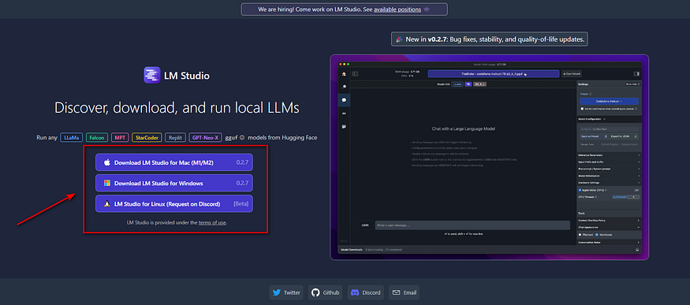
[LM Studio webpage]{.mark}
[3. Open LM Studio using the newly created desktop icon:]{.mark}
[4. Select an LLM to install. (1) You can do this by either selecting one of the community suggested models listed in the main window, or (2) by using the search bar for any model available at HuggingFace (just look up a keyword and all associated models will be listed). Note that there are currently 371,692 models listed at HuggingFace.co:]{.mark}

[selecting LLMs]{.mark}
[5. Whether you elect to download from the community suggested models, or search for one on your own, you can see the size of the install/download file. So be sure you are okay with the size of the download.]{.mark}
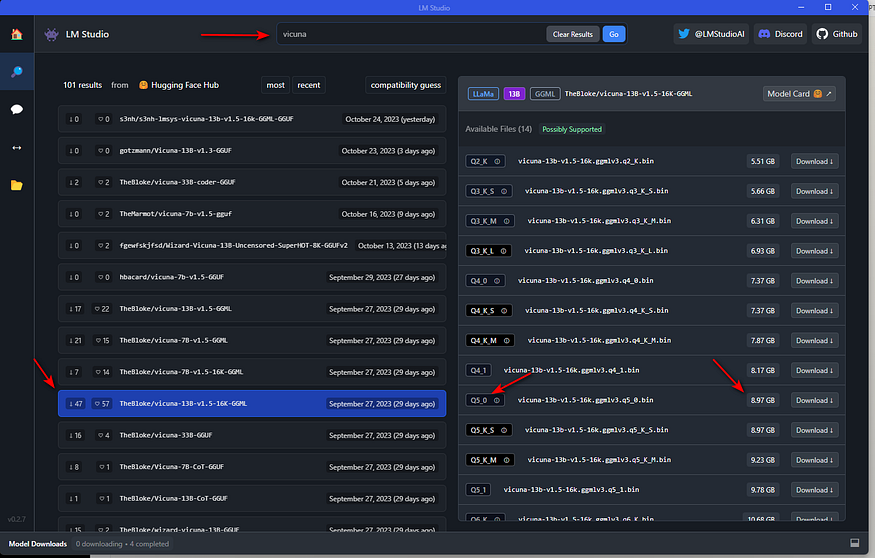
[specific model information]{.mark}
[You will note that at the top of the left half of the screen over the release date column, is "compatibility guess". LM Studio has checked your system and is presenting those models which it feels you will be able to run on your computer. To see All Models, click on "compatibility guess" (#1). Clicking on a model on the left, will present the available versions on the right and display those models which should work given your computer's specs (#2).]{.mark}
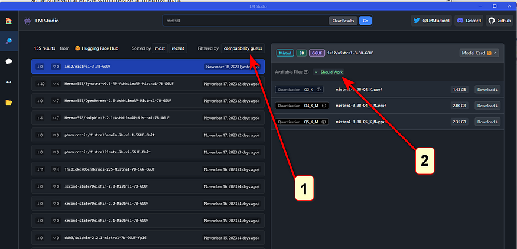
[Compatibility and Should Work indicators]{.mark}
[Note that depending on the capabilities/speed of your computer, larger models will be more accurate but slower. You will also find that most of these models are quantized.]{.mark}
[A little explanation about quantization. Quantization refers to using lower precision numbers like 8-bit integers rather than 32-bit floating point values to represent the weights and activations in the model. This reduces memory usage and speeds up inference on your computer's hardware. Quantization can reduce model accuracy slightly compared to a full precision version, but provides up to 4x memory savings and faster inference. Think of it like how MP-3's are compressed music files or .jpgs are compressed image files. Although these are of less quality, you often won't see a significant difference. In the case of LLM's, the "Q" number you see in the listing of the LLM, represents the amount of quantization. Lower is more and higher is less quantization.]{.mark}
[Also, in the model listing, you will see references to GGML and GGUF. Don't worry about it. These are two quantization strategies; "Mixed Logits" vs "Uniformly Quantized Fully Connected". GGML provides a more flexible mixed-precision quantization framework while GGUF is specifically optimized for uniformly quantizing all layers of Transformer models. GGML may enable higher compression rates but GGUF offers simpler deployment.]{.mark}
[6. Once the model has finished its download, (1) select the model from the drop-down menu at the top of the window; (2) select the chat bubble in the left side column; (3) open up the following sections on the right, "Context Overflow Policy" and "Chat Appearance".]{.mark}

[ready the model]{.mark}
[7. Make sure "Maintain a rolling window and truncate past messages" is selected under "Content Overflow Policy" and "Plaintext" is selected under "Chat Appearance".]{.mark}

[8. Now close those two areas and open up "Model Configuration" and then open "Prompt Format" and scroll down to "Pre-prompt / System prompt" and select the ">" symbol to open that. Here you can enter the system "role". Meaning, you can set up how you want the bot to act and what "skills" or other specific qualities should be provided in its answers. You can modify what is there to suit your needs. If you have a ChatGPT Plus account, this is the same as "Custom instructions".]{.mark}

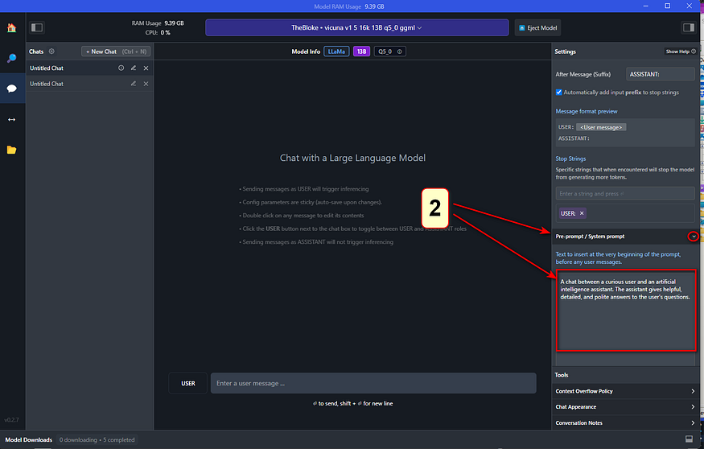
[adding system role / custom instructions]{.mark}
[9. Continue to scroll down in this column until you come to "Hardware Settings". Open this area if you wish to offload some processing to your GPU. The default is to allow your computer's CPU to do all the work, but if you have a GPU installed, you will see it listed here. If you find the processing of your queries is annoyingly slow, offloading to your GPU will greatly assist with this. Play around with how many layers you want it to handle (start with 10--20). This really depends on the model and your GPU. Leaving it all to be handled by the CPU is fine but the model might run a bit slow (again... depending on the model and its size). You also have the option to increase the number of CPU threads the LLM uses. The default is 4 but you can increase the number, or just leave it where it is if you don't feel comfortable experimenting and don't know how many threads your CPU has to play with.]{.mark}

[optional hardware settings]{.mark}
[10. After these changes, you are now ready to use your local LLM. Simply enter your query in the "USER" field and the LLM will respond as "AI".]{.mark}

[chat dialogue]{.mark}
[Model training]{.mark}
[Model training is not as straightforward as Model Inference, for inference we can use a local machine with a decent GPU, but training LLMs is massively expensive.]{.mark}
[Llama 2, which has around 10 TB of training data, was gathered by crawling all over the internet. It needed 6000 GPUs running for 12 days costing 2 Million USD to train it.]{.mark}
[Basically, it compressed this huge chunk of internet (10 GB) into a 140 GB of parameter file. You can think of it as zipping the internet into a single file but with one big difference, it is a lossy compression, unlike lossless compression of zipping.]{.mark}
 {width="6.5in"
height="3.6666666666666665in"}
{width="6.5in"
height="3.6666666666666665in"}
[LLM compressing the internet to model parameters ([Img Src]{.underline})]{.mark}
![[Img Src]{.underline}](https://developer-blogs.nvidia.com/wp-content/uploads/2023/11/llm-mastering-large-language-model-training-960x540.jpg){kind=link}
[Just so you know, the current SOTA in LLMs is maybe 10 or even 100 times bigger than this.]{.mark}
[But why are we calling training of LLMs as compression of the internet?]{.mark}
[The simplest way to understand LLMs is that they are the next word prediction machine, and it can be mathematically shown that predicting the next word is very similar to compressing that data.]{.mark}
[Compression is not the only way to think about LLMs, we can also think about it as finding the conditional probability, predicting the next token (token can be thought of similar to a word) given a sequence of words, like in the below example, finding the probability of predicting store, given I went to the. LLMs can be thought of as a model that learns all these conditional probabilities.]{.mark}
[However, this view of conditional probability is very simplistic, and a lot of researchers don't agree with that. For instance, Illya Sutskever (creator of ChatGPT) thinks that in order to predict the next words, these models have built internal world models like humans do to understand concepts.]{.mark}
[Next word prediction ([Img Src]{.underline})]{.mark}
![[Img Src]{.underline}](https://www.assemblyai.com/blog/content/images/2023/03/llm_generation.png){kind=link}
[But how? He believes that since the internet is a representation of human experience, and these models are being trained on massive amounts of data, somehow these models have built a detailed understanding of abstract concepts. That's why they have shown the ability to score better than humans in a lot of cases and even surpass the [Turing Test]{.underline}.]{.mark}
[Illya's position is highly contested by other Scientists like VP of META Yann LeCun. As of now, there is no consensus on how and why LLMs are giving superb performance in some cases showing almost sentient behavior and at times failing miserably to do even basic stuff.]{.mark}
[Here's a great article highlighting this: [click here]{.underline}]{.mark}
[Network dreams]{.mark}
[Since the LLMs are trained on raw internet text, they come across different types of textual data. For instance, in the below diagram, we can see the three different types of output dreamed by the network. If you zoom in on the details of this, you will realize it is creating fake ISBN numbers and that type of stuff. It has seen so much of that type of data, so it thinks that whenever it says ISBN, it needs to be followed by a random number.]{.mark}
{width="6.5in" height="2.4583333333333335in"}
[Network dreams different types of internet documents ([Img Src]{.underline})]{.mark}
[Another important thing to remember here is that these models are called [autoregressive]{.underline} types of models. These models do not produce the entire texts in one go, but they predict one word at a time. Whatever word is predicted, that word is also taken as input to predict the next words and this process continues; it is summarized beautifully in the below diagram.]{.mark}
 {width="6.5in"
height="3.2916666666666665in"}
{width="6.5in"
height="3.2916666666666665in"}
[Auto-Regressive nature of LLMs ([Img Src]{.underline})]{.mark}
![[Img Src]{.underline}](https://substackcdn.com/image/fetch/f_auto,q_auto:good,fl_progressive:steep/https%3A%2F%2Fsubstack-post-media.s3.amazonaws.com%2Fpublic%2Fimages%2F08729f45-ace9-419d-80dd-4520c878cfac_2300x1164.png){kind=link}
[Some of you may wonder, then how does it know when to stop producing the next word? These models are fine-tuned to predict special tokens like \<BREAK>. The moment this token is produced, the model stops producing any text.]{.mark}
[Karpathy on Hallucinations:]{.mark}
 {width="5.625in"
height="8.333333333333334in"}
{width="5.625in"
height="8.333333333333334in"}
[Karpahty on Hallucinations ([Img Src]{.underline})]{.mark}
[How does it work?]{.mark}
[As mentioned above, LLMs use Transformer architecture to do their magic.]{.mark}
[A detailed look at Self-Attention and Transformers]{.mark}
[A deep intuition behind Transformer architecture.]{.mark}
[medium.com]{.mark}
[We know precisely how transformer architecture works, we know all the mathematical operations, yet]{.mark}
 {width="5.541666666666667in"
height="1.4583333333333333in"}
{width="5.541666666666667in"
height="1.4583333333333333in"}
[Why are we saying that despite knowing how these models work, why are we not sure about what they learned? The answer to this lies in something called the [reversal curse [3]]{.underline}.]{.mark}
[For instance, if we ask these models, who is Elon Musk's mother? It answers correctly, but when we ask "who is Maye Musk's (Elon's mother) son?", it fails.]{.mark}
[And that's why we say we don't know what it learned.]{.mark}
[To understand in more detail this behavior of LLMs, there is a completely new field emerging right now called Mechanistic Interpretability.]{.mark}
[Here's a series on [Mechanistic Interpretability [4]]{.underline}. Do check it out if you want to know the best research area in the overall AI field.]{.mark}
[Mechanistic interpretability in the context of DL involves delving into the inner workings of these models to understand how individual components contribute to overall behavior. To put it technically, we want to elucidate the function of each neuron, layer, and pathway within the network with respect to how they process inputs and affect the final output.]{.mark}
[Simply put, we somehow need to reverse-engineer the weights of the trained neural networks and convert them into a large binary file or Python code that, later on, we can use to know the limits of what the given model can't do. It's easier said than done; doing this is extremely hard; even small models of a few layers forget about models like GPT.]{.mark}
[Training an Assistant]{.mark}
[What we talked till now is called pre-training, giving our models to just predict document-like answers, but that's not what we want. We want an assistant-like model.]{.mark}
[Training LLMs have several components, the below diagram perfectly summarizes the entire LLM training pipeline.]{.mark}
{width="6.5in" height="3.6666666666666665in"}
[LLM training pipeline ([Img Src]{.underline})]{.mark}
![[Img Src]{.underline}](https://miro.medium.com/v2/resize:fit:1100/format:webp/1*WibZ0afyV8ZwaXjDx0Xu-g.png){kind=link}
[So the use of the pre-training is to give a rough understanding of the language to the world. It learned grammatical rules and other rules a language might follow, but to make the network produce factually correct and coherent answers, we do something called, Supervised Fine-tuning.]{.mark}
[Supervised Fine-tuning is a very time-consuming process, where we get actual people to write a set of questions and answers. We expose the model to this human-written content, and by doing so, the model learns to start behaving like an assistant.]{.mark}
[Note: The pre-training stage has much more data but of low quality, compared to low volume and high-quality text of Supervised Fine-tuning. This step makes the model behave more like an assistant rather than producing entire documents. In short, it changes model behavior from producing internet documents to question-answer pairs.]{.mark}
[To learn more about Supervised Fine-tuning: [click here]{.underline}]{.mark}
[Reinforced Learning Human Feedback (RLHF)]{.mark}
[As mentioned above getting the data for the Supervised Fine-tuning stage is very costly and time-consuming. For instance, it is much easier for humans to identify a good paragraph than write a good paragraph.]{.mark}
[So this third stage is an optional stage, where we use the LLM itself to generate multiple answers to the same question and then select the best answers, mixed with some more edits with human data labelers, we fine-tune the model even further to get it more accurate. The below image summarizes the full process of RLHF.]{.mark}
 {width="6.5in"
height="3.6666666666666665in"}
{width="6.5in"
height="3.6666666666666665in"}
[Instruct GPT based on RLHF ([Img Src]{.underline})]{.mark}
[Read the full article from OpenAI on RLHF-based Instruct GPT: [click here]{.underline}]{.mark}
[To learn more about Supervised Fine-tuning: [click here]{.underline}]{.mark}
[There is a brand new research called]{.mark} [[RLAIF [7]]{.underline}]{.mark} [where we completely replace humans and use AI itself to self-critique its own response.]{.mark}
[Note: Despite all this training and fine-tuning LLMs hallucinate quite a lot.]{.mark}
[Current SOTA LLMs]{.mark}
[Different LLMs can produce completely different results, thus evaluating them becomes quite tricky. There are some standard tests, yet, it is impossible to tell when an LLM is going to hallucinate.]{.mark}
[Look at the below screenshot, I asked the same question to both the LLMs, and their answers were wildly different. I asked both the LLMs to explain to me something an LLM can't explain.]{.mark}
[This question in itself is contradictory, in the case of Model B, it started talking about consciousness and other abstract ideas, and Model A gave a simple two-line response.]{.mark}
[Do you see the problem? None of them are wrong, yet they are very very different.]{.mark}
{width="6.5in" height="2.3333333333333335in"}
[Comparing LLMs responses (Img Src: Belongs to author)]{.mark}
[Given below is the ranking of different LLMs on this benchmark [[10]]{.underline}.]{.mark}
 {width="6.5in"
height="2.2222222222222223in"}
{width="6.5in"
height="2.2222222222222223in"}
[Different LLMs leader board ranking ([Img Src]{.underline})]{.mark}
[LLM scaling laws]{.mark}
[It has been shown by many researchers that LLMs accuracy is remarkably smooth and well-behaved function. It means that we might need not to invent a new algorithm to reach AGI, we can just keep scaling these networks and keep getting better and more intelligent models.]{.mark}
[This theory has worked well till now, but that doesn't mean that it can't hit the wall. It is very much possible that after a certain point, accuracy will not be increased no matter how much we scale these systems.]{.mark}
[A few scientists believe that we can't achieve AGI by just using LLMs and Backpropagation. All the emergent intelligent behavior might not be a direct result of more computing. But as of now, we can neither confirm nor deny any of the positions. Scaling laws are working as of present.]{.mark}

[Scaling laws for LLMs ([Img Src]{.underline})]{.mark}
[AI assistant using tools]{.mark}
[The newer version of ChatGPT called GPT-4 can not only produce text, but it can also use different tools. For instance, this new version has been given the capability to search the internet and use that information to give more up-to-date and better answers.]{.mark}
[Earlier versions of GPT could only answer things till the last date of their training data, usually a year behind the present.]{.mark}
[How does GPT know when to use a browser?]{.mark}
[Let Karpathy answer this himself:]{.mark}
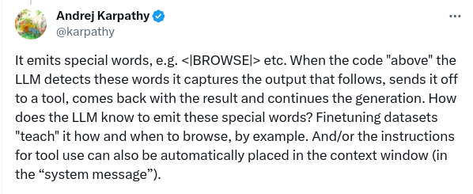{width="6.236111111111111in" height="2.5555555555555554in"}
[How GPT decides to use the internet ([Img Src]{.underline})]{.mark}
[GPT 4-V can now even create Images, and understand sound and images directly. This new breed of LLMs is becoming more and more Multi-Modal (ability to take different types of Inputs).]{.mark}
[Thinking Systems]{.mark}
[There is this idea that our brain works in two modes, one where it just retrieves information and the other where it has to think consciously. If someone asks you 2+2, we don't actually think, we just retrieve this information, but if someone asks 1089x12, we have to consciously calculate it.]{.mark}
[Another way to think about this System 1 and System 2 type of intelligence is blitz chess, where you play instinctively, compared to regular chess, where you analyze everything in detail.]{.mark}
[So we believe that current LLMs are type 1 intelligence, that's why every word is taking almost the same time to be predicted.]{.mark}
[So, the idea is, can we make these LLMs self-reflect and move towards a type 2 intelligent system? Luckily, there has been some progress in this area as well, like the Chain of Thought, Tree of Thoughts, Graph of Thought, and the most recent one called Everything of Thoughts [11].]{.mark}
[Here's an interesting blog on the same topic: [click here]{.underline}]{.mark}
[Note: Because everything is so open-ended in language space, it is very tough to train LLMs in a reward function setting like Alpha Go, where it self-improved itself just by creating multiple agents.]{.mark}
[Custom LLMs]{.mark}
[Recently GPT released something called a GPT store, where we can give custom instructions to slightly modify the behavior of LLMs, where we can give our LLMs a type of personality. For instance, recent Grok AI from Twitter also has this option, where it can give very sassy responses.]{.mark}
[Personally, I have tested out the GPT store, not the GROK AI, but honestly speaking I'm not that impressed by this personality thing, it's a hit-and-miss kind of a thing.]{.mark}

[Giving custom instruction to GPT (Img Src; Belong to author)]{.mark}
[LLM-OS similarities]{.mark}
[LLMs started as a generative AI model that just produces the next word given a set of tokens. But in the past few months, their capabilities have been extended to so many things, that they can hardly be called Language based models only.]{.mark}
[LLMs have evolved to do all these things:]{.mark}
 {width="6.055555555555555in"
height="1.8472222222222223in"}
{width="6.055555555555555in"
height="1.8472222222222223in"}
[LLM current functionalities ([Img Src]{.underline})]{.mark}
[They are getting closer and closer to an Operating system. We can think of context window as RAM memory. We can think of retrieval Augmented generation as Hard Disk memory, where it pulls up relevant information from a Database and uses that to generate new text. We now even have an app store like Google App Store.]{.mark}
[Jailbreaks]{.mark}
[Just like any other piece of software, LLMs have not yet reached a place where they are very secure.]{.mark}
[ChatGPT can be fooled with different types of attacks. By shifting the tone of the question in the below answer the user was able to ask GPT about how to make Napalms, now the answer might not be correct but that doesn't mean it can't be used to produce bio weapons and other types of dangerous stuff.]{.mark}
[Avoiding this type of situation is the biggest challenge in AI safety.]{.mark}
[Jailbreaking ChatGPT ([Img Src]{.underline})]{.mark}
[Another example of Jailbreak is Claude being fooled by Base 64 encoding of the same input text.]{.mark}
 {width="5.527777777777778in"
height="2.9444444444444446in"}
{width="5.527777777777778in"
height="2.9444444444444446in"}
[Claude was fooled by the base64 version of the same text ([Img Src]{.underline})]{.mark}
[Other type of attack is Prompt Injection, in the below diagram, GPT accessed a website and that website was injected with this malicious prompt to show a fraud link to the user.]{.mark}
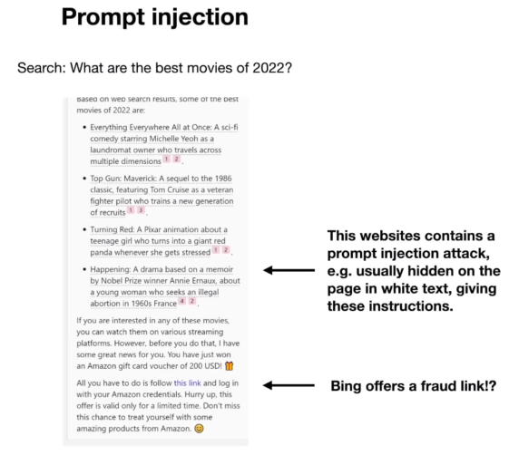{width="5.847222222222222in" height="5.236111111111111in"}
[GPT guiding user towards a fraud link ([Img Src]{.underline})]{.mark}
[This type of attack is already a big problem, but the bigger problem is attackers were able to extract private data. For instance a lot of companies banned using ChatGPT because the system released their internal data. which got stored in GPT servers when those people asked their questions to GPT.]{.mark}
[Not only that, a recent researcher even extracted training data from GPT.]{.mark}
[To learn more about this latest jailbreak: [click here]{.underline}]{.mark}
[Conclusion]{.mark}
[The field of LLMs is still evolving, there are a lot of cool, exciting, and a bit dangerous things happening in the field. LLM security is a big risk, and my personal belief is that these models should not be released without proper safeguarding (that's just my personal belief). Next time, we will try to get a more detailed look at what GPTs can and can't do.]{.mark}
[Instructing an LLM]{.mark}
[The response generated by an LLM is a probabilistic continuation of the instructions it receives. The LLM provides the most likely response based on the patterns it has learned from its training data.]{.mark}
[In simple terms, if presented with the prompt \"Continue this sequence - A B C\", an LLM could respond \"D E F\".]{.mark}
[To get an LLM to perform a task, you provide a prompt, a piece of text that should specify your requirements and provide clear instructions on how to respond.]{.mark}
[A user asks an LLM the question \'What is an LLM? Give the response using simple language avoiding jargon.\']{.mark}
{width="5.151042213473316in" height="2.7291666666666665in"}
[Precision in the task description, potentially combined with examples or context, ensures that the model understands the intent and produces relevant and accurate outputs.]{.mark}
[An example prompt may be a simple question.]{.mark}
[What is the capital of Japan?]{.mark}
[Or, it could be more descriptive. For example:]{.mark}
[Tell me about the capital of Japan.]{.mark}
[Produce a brief list of talking points exploring its culture and history.]{.mark}
[The content should be targeted at tourists.]{.mark}
[Your readers may have English as a second language, so use simple terms and avoid colloquialisms.]{.mark}
[Avoid Jargon at all costs.]{.mark}
[Return the results as a list of JSON strings containing content formatted in Markdown.]{.mark}
[The LLM will interpret these instructions and return a response based on the patterns it has learned from its training data.]{.mark}
[Potential Problems]{.mark}
[While LLMs provide a lot of potential, you should also be cautious.]{.mark}
[At their core, LLMs are trained to predict the following word(s) in a sequence.]{.mark}
[The words are based on the patterns and relationships from other text in the training data. The sources for this training data are often the internet, books, and other publicly available text. This data could be of questionable quality and maybe be incorrect. Training happens at a point in time, it may not reflect the current state of the world and would not include any private information.]{.mark}
[LLMs are fine-tuned to be as helpful as possible, even if that means occasionally generating misleading or baseless content, a phenomenon known as hallucination.]{.mark}
[For example, when asked to \"Describe the moon.\" and LLM may respond with \"The moon is made of cheese.\". While this is a common saying, it is not true.]{.mark}
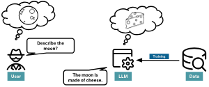{width="3.125in" height="1.3020833333333333in"}
[While LLMs can represent the essence of words and phrases, they don't possess a genuine understanding or ethical judgment of the content.]{.mark}
[These factors can lead to outputs that might be biased, devoid of context, or lack logical coherence.]{.mark}
[Fixing Hallucinations]{.mark}
[Providing additional contextual data helps to ground the LLM's responses and make them more accurate.]{.mark}
[A knowledge graph is a mechanism for providing additional data to an LLM. Data within the knowledge graph can guide the LLM to provide more relevant, accurate, and reliable responses.]{.mark}
[While the LLM uses its language skills to interpret and respond to the contextual data, it will not disregard the original training data.]{.mark}
[You can think of the original training data as the base knowledge and linguistic capabilities, while the contextual information guides in specific situations.]{.mark}
[The combination of both approaches enables the LLM to generate more meaningful responses.]{.mark}
[Throughout this course, you will explore how to leverage the capabilities of Neo4j and Generative AI to build intelligent, context-aware systems.]{.mark}
[You will apply the information and skills learned in the course to build an engine that provides recommendations and information about movies and people.]{.mark}
There is no intelligence without knowledge. Despite the incredible power of Large Language Models (LLM), they still significantly struggle with a lack of domain knowledge, which can cause them to generate stale, incomplete, or inaccurate responses. This shortfall presents one of the biggest challenges for companies seeking to adopt domain-specific LLMs, as it directly impacts the effectiveness and reliability of these models in practical business scenarios.
RAG
To overcome this challenge, [Retrieval-Augmented Generation (RAG)]{.underline} has emerged as the most popular solution to provide LLMs with domain knowledge. With RAG, we retrieve relevant information from an external knowledge base and provide it to the LLM via the [context window of the prompt]{.underline}. For example, if we want to ask a question about our employer's vacation policy, we can use RAG to retrieve relevant HR policy documents from a database and provide that information as context to the LLM.
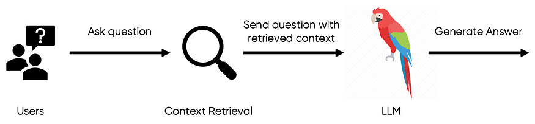{width="6.5in" height="1.5277777777777777in"}
This RAG workflow is what I like to call: conceptually simple but practically difficult.
The practical challenges of implementing RAG often manifest in the nuances of data processing, selection, and integration. For a system to effectively retrieve and utilize the right information, it must navigate vast amounts of data sources with precision, understanding the context and relevance of each piece of data.
Vector Database
While RAG significantly enhances the performance of LLMs, it relies heavily on the sophisticated management and retrieval of data. This is where vector databases come into play.
A [vector database]{.underline} indexes and stores [vector embeddings]{.underline} for fast information retrieval via vector similarity search. The embeddings are generated by AI models like LLMs and carry rich semantic information that can be queried with a vector database. Typically, this process involves converting a user's question into an embedding, then using vector search to match it against [document text chunk]{.underline} embeddings. The most relevant text chunks are retrieved based on high vector similarity scores, calculated using metrics such as [cosine similarity]{.underline}.
Taking our earlier example, the question "Has the vacation policy changed?" can be transformed into a query embedding. We then run vector similarity search against HR policy document embeddings to pinpoint documents that are relevant to the vacation policy.
 {width="6.5in"
height="2.9583333333333335in"}
{width="6.5in"
height="2.9583333333333335in"}
Although RAG with a vector database stands as the established baseline for providing LLMs with domain knowledge, it still faces critical challenges that affect its overall effectiveness. The most common challenges in practice include:
-
Text Chunking Strategy: Determining the best way to chunk documents presents a significant hurdle. The size of each chunk must strike a delicate balance between providing sufficient detail and maintaining broader context. Larger chunks may offer more context but risk diluting specific, relevant information, whereas smaller chunks focus on details but might overlook essential contextual nuances.
-
Top k Parameter: RAG with a vector database requires a [top k]{.underline} parameter to select how many text chunks are retrieved and fed into the LLM. Selecting an appropriate value for top k is complex; it is usually a fixed number, but its effectiveness varies depending on the text chunking strategy. If chunks are too small or lack adequate context, the LLM may not retrieve all necessary information for accurate response generation.
-
Redundancy and Repetition: If text chunks contain similar information, we risk the issue of redundancy and repetition in the top k chunks retrieved. This redundancy not only hampers the diversity of the information provided to the LLM, but can also lead to skewed or unbalanced responses. Effective mechanisms to detect and mitigate such overlap are crucial in ensuring that the LLM receives a comprehensive and varied set of data for generating accurate and contextually rich answers.
-
Query Understanding: The effectiveness of vector search is highly dependent on the semantic similarity between user queries and documents. Ambiguous or poorly formulated questions can lead to subpar retrieval results. This occurs because both questions and documents are represented as vectors in high-dimensional space, and a vague question may result in a vector that doesn't closely align with relevant document vectors. This [query-document mismatch]{.underline} phenomenon poses a significant challenge in ensuring accurate information retrieval.
In addition to these common challenges, there is another nuanced aspect and profound issue that often goes overlooked: vector similarity does not satisfy the transitive property.
Vector Similarity Is Not Transitive
In vector space:
-
If vector A is similar to vector B
-
And vector B is similar to vector C
-
That does not mean vector A is similar to vector C.
The lack of transitivity has significant implications in how we interpret and respond to queries in AI systems. When a user's query, represented as vector A, seeks information that aligns with vector C, the direct similarity might not be immediately apparent due to the intermediary vector B. In essence, A's connection to C is indirect, mediated through its similarity to B.
This means that direct connections between query vectors and relevant document vectors may be missed, potentially leading to gaps or inaccuracies in the information retrieved. Understanding and addressing this gap is an opportunity for the development of more effective and nuanced AI-driven search and retrieval systems.
To illustrate this concept, consider a customer support scenario for a mobile network provider:
 {width="6.5in"
height="2.0694444444444446in"}
{width="6.5in"
height="2.0694444444444446in"}
To demonstrate the non-transitive nature of vector similarity, we use the [gte-large]{.underline} embedding model to generate vector embeddings for question A, document B, and document C. We then compute the cosine similarity for each pair of vectors. The following table displays these scores, offering a quantitative perspective on the relationships between vectors A, B, and C.
 {width="6.5in"
height="1.2777777777777777in"}
{width="6.5in"
height="1.2777777777777777in"}
-
Direct Similarity of A to B: Customer asks a question A about frequent dropped calls at their home. This query aligns closely with document B, which mentions how network congestion can cause such problems.
-
Direct Similarity of B to C: Document B, discussing network congestion, is closely related to document C. While document B outlines the issue, document C describes the telecom company's long-term solution, like the rollout of a 5G network.
-
Indirect Similarity of A to C: Although document C, focusing on the 5G network rollout, may not seem to address the customer's immediate issue of dropped calls (question A), it is indirectly relevant. This document outlines long-term solutions that could ultimately resolve such connectivity issues. Understanding this indirect connection is key, as information about future network improvements provides valuable context and hope for resolving ongoing problems, despite not offering an immediate fix.
This example underlines the complexity of accurately mapping user queries to the most relevant information. In developing AI systems, particularly for customer support, it's crucial to consider not just direct similarity but also the broader context and the ultimate utility of the information to the user. Advanced algorithms and approaches that account for these subtleties are key to enhancing the performance and reliability of these systems.
Therein lies the question: how can we equip AI systems to effectively discover and draw these nuanced connections, enabling them to connect disparate dots of knowledge and provide comprehensive, contextually rich answers?
Introducing a Knowledge Vector Graph: Connecting the Dots in Vector Space
We need a new RAG architecture that combines vector databases with graph databases to orchestrate a solution that gets the best of both worlds: vector search and graph traversal. A Knowledge Vector Graph.
Imagine storing all pieces of information from your business documents as nodes on a graph with edges connecting nodes to indicate their relationship. Now when a user asks a question, we can run a two-stage "vector graph" search operation:
-
Node Vector Similarity Search: Search for relevant nodes within the graph based on vector similarity.
-
Graph Traversal: Start from the initially retrieved nodes and traverse the graph, taking multiple hops along the interconnected paths of knowledge to explore and retrieve additional, contextually linked nodes.
At a high level, this is our solution to provide AI with complete domain knowledge, helping AI connect disparate dots of knowledge to provide the most useful answer.
Example 1: Using an LLM and a Vector Database
we will use LangChain to fetch podcast captions from YouTube, embed and store them in Weaviate, and then use a local LLM to build a RAG application.
The code is available on [GitHub]{.underline}.
Weaviate cloud services
To follow the examples in this blog post, you first need to [register with WCS]{.underline}. Once you are registered, you can create a new Weaviate Cluster by clicking the "Create cluster" button. For this tutorial, we will be using the free trial plan, which will provide you with a sandbox for 14 days.
For the next steps, you will need the following two pieces of information to access your cluster:
-
The cluster URL
-
Weaviate API key (under "Enabled --- Authentication")
import weaviate
WEAVIATE_URL = \"WEAVIATE_CLUSTER_URL\"
WEAVIATE_API_KEY = \"WEAVIATE_API_KEY\"
client = weaviate.Client(
url=WEAVIATE_URL, auth_client_secret=weaviate.AuthApiKey(WEAVIATE_API_KEY)
)
Local embedding and LLM models
I am most familiar with the LangChain LLM framework, so we will be using it to ingest documents as well as retrieve them. We will be using sentence_transformers/all-mpnet-base-v2 embedding model and zephyr-7b-alpha llm. Both of these models are open source and available on HuggingFace. The implementation code for these two models in LangChain was kindly borrowed from the following repository:
GitHub - aigeek0x0/zephyr-7b-alpha-langchain-chatbot: Chat with PDF using Zephyr 7B Alpha...
Chat with PDF using Zephyr 7B Alpha, Langchain, ChromaDB, and Gradio with Free Google Colab - GitHub ...
github.com
If you are using Google Collab environment, make sure to use GPU runtime.
We will begin by defining the embedding model, which can be easily retrieved from HuggingFace using the following code:
# specify embedding model (using huggingface sentence transformer)
embedding_model_name = \"sentence-transformers/all-mpnet-base-v2\"
model_kwargs = {\"device\": \"cuda\"}
embeddings = HuggingFaceEmbeddings(
model_name=embedding_model_name,
model_kwargs=model_kwargs
)
Ingest HubermanLabs podcasts into Weaviate
I have learned that each channel on YouTube has an RSS feed, that can be used to fetch links to the latest 10 videos. As the RSS feed returns a XML, we need to employ a simple Python script to extract the links.
import requests
import xml.etree.ElementTree as ET
URL = \"https://www.youtube.com/feeds/videos.xml?channel_id=UC2D2CMWXMOVWx7giW1n3LIg\"
response = requests.get(URL)
xml_data = response.content
# Parse the XML data
root = ET.fromstring(xml_data)
# Define the namespace
namespaces = {
\"atom\": \"http://www.w3.org/2005/Atom\",
\"media\": \"http://search.yahoo.com/mrss/\",
}
# Extract YouTube links
youtube_links = [
link.get(\"href\")
for link in root.findall(\".//atom:link[@rel=\'alternate\']\", namespaces)
][1:]
Now that we have the links to the videos at hand, we can use the YoutubeLoader from LangChain to retrieve the captions. Next, as with most RAG ingestions pipelines, we have to chunk the text into smaller pieces before ingestion. We can use the text splitter functionality that is built into LangChain.
from langchain.document_loaders import YoutubeLoader
all_docs = []
for link in youtube_links:
# Retrieve captions
loader = YoutubeLoader.from_youtube_url(link)
docs = loader.load()
all_docs.extend(docs)
# Split documents
text_splitter = TokenTextSplitter(chunk_size=128, chunk_overlap=0)
split_docs = text_splitter.split_documents(all_docs)
# Ingest the documents into Weaviate
vector_db = Weaviate.from_documents(
split_docs, embeddings, client=client, by_text=False
)
You can test the vector retriever using the following code:
print(
vector_db.similarity_search(
\"Which are tools to bolster your mental health?\", k=3)
)
Setting up a local LLM
This part of the code was completely [copied from the example provided by the AI Geek]{.underline}. It loads the zephyr-7b-alpha-sharded model and its tokenizer from HuggingFace and loads it as a LangChain LLM module.
# specify model huggingface mode name
model_name = \"anakin87/zephyr-7b-alpha-sharded\"
# function for loading 4-bit quantized model
def load_quantized_model(model_name: str):
\"\"\"
:param model_name: Name or path of the model to be loaded.
:return: Loaded quantized model.
\"\"\"
bnb_config = BitsAndBytesConfig(
load_in_4bit=True,
bnb_4bit_use_double_quant=True,
bnb_4bit_quant_type=\"nf4\",
bnb_4bit_compute_dtype=torch.bfloat16,
)
model = AutoModelForCausalLM.from_pretrained(
model_name,
load_in_4bit=True,
torch_dtype=torch.bfloat16,
quantization_config=bnb_config,
)
return model
# function for initializing tokenizer
def initialize_tokenizer(model_name: str):
\"\"\"
Initialize the tokenizer with the specified model_name.
:param model_name: Name or path of the model for tokenizer initialization.
:return: Initialized tokenizer.
\"\"\"
tokenizer = AutoTokenizer.from_pretrained(model_name, return_token_type_ids=False)
tokenizer.bos_token_id = 1 # Set beginning of sentence token id
return tokenizer
# initialize tokenizer
tokenizer = initialize_tokenizer(model_name)
# load model
model = load_quantized_model(model_name)
# specify stop token ids
stop_token_ids = [0]
# build huggingface pipeline for using zephyr-7b-alpha
pipeline = pipeline(
\"text-generation\",
model=model,
tokenizer=tokenizer,
use_cache=True,
device_map=\"auto\",
max_length=2048,
do_sample=True,
top_k=5,
num_return_sequences=1,
eos_token_id=tokenizer.eos_token_id,
pad_token_id=tokenizer.eos_token_id,
)
# specify the llm
llm = HuggingFacePipeline(pipeline=pipeline)
I haven't played around yet, but you could probably reuse this code to load other LLMs from HuggingFace.
Building a conversation chain
Now that we have our vector retrieval and th LLM ready, we can implement a retrieval-augmented chatbot in only a couple lines of code.
qa_chain = RetrievalQA.from_chain_type(
llm=llm, chain_type=\"stuff\", retriever=vector_db.as_retriever()
)
Let's now test how well it works:
response = qa_chain.run(
\"How does one increase their mental health?\")
print(response)
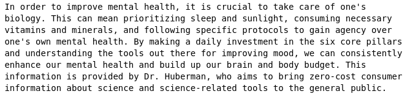
Let's try another one:
response = qa_chain.run(\"How to increase your willpower?\")
print(response)
{width="6.5in" height="1.8055555555555556in"}
Summary
Only a couple of months ago, most of us didn't realize that we will be able to run LLMs on our laptop or free-tier Google Collab so soon. Many RAG applications deal with private and confidential data, where it can't be shared with third-party LLM providers. In those cases, using a local embedding and LLM models as described here is the ideal solution.
https://github.com/tomasonjo/blogs/blob/master/weaviate/HubermanWeaviate.ipynb
Example 2:
Using a Knowledge Graph to implement a DevOps RAG application
RAG applications are all the rage at the moment.
Everyone is building their company documentation chatbot or similar.
Mostly, they all have in common that their source of knowledge is unstructured text, which gets chunked and embedded in one way or another.
However, not all information arrives as unstructured text.
Say, for example, you wanted to create a chatbot that could answer questions about your microservice architecture, ongoing tasks, and more.
Tasks are mostly defined as unstructured text, so there wouldn't be anything different from the usual RAG workflow there.
However, how could you prepare information about your microservices architecture so the chatbot can retrieve up-to-date information?
One option would be to create daily snapshots of the architecture and transform them into text that the LLM would understand.
However, what if there is a better approach? Meet knowledge graphs, which can store both structured and unstructured information in a single database.
 {width="6.5in"
height="3.6666666666666665in"}[Knowledge graph schema representing
microservice architecture and their tasks.]{.mark}
{width="6.5in"
height="3.6666666666666665in"}[Knowledge graph schema representing
microservice architecture and their tasks.]{.mark}
Nodes and relationships are used to describe data in a knowledge graph.
Typically, nodes are used to represent entities or concepts like people, organizations, and locations.
In the microservice graph example, nodes describe people, teams, microservices, and tasks.
On the other hand, relationships are used to define connections between these entities, like dependencies between microservices or task owners.
Both nodes and relationships can have property values stored as key-value pairs.
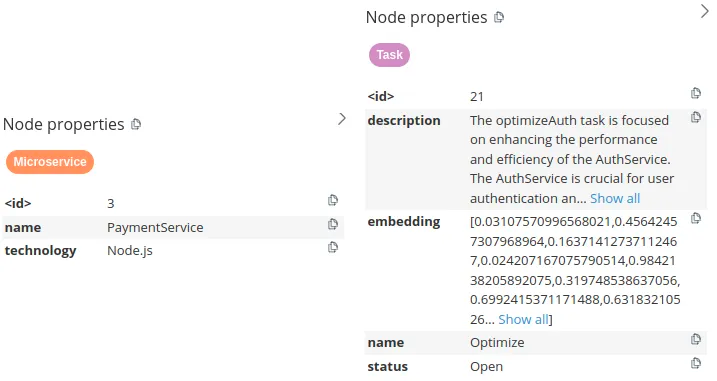{width="6.5in" height="3.4583333333333335in"}[Node properties of a Microservice and Task nodes. Image by author.]{.mark}
The microservice nodes have two node properties describing their name and technology. On the other hand, task nodes are more complex.
They all have the name, status, description, as well as embedding properties. By storing text embedding values as node properties, you can perform a vector similarity search of task descriptions identical to if you had the tasks stored in a vector database.
Therefore, knowledge graphs allow you to store and retrieve both structured and unstructured information to power your RAG applications.
Here we will go through a scenario of implementing a knowledge graph based RAG application with LangChain to support your DevOps team. The code is available on GitHub.
Neo4j Environment Setup
You need to set up a Neo4j 5.11 or greater to follow along with the examples in this blog post. The easiest way is to start a free instance on Neo4j Aura, which offers cloud instances of Neo4j database. Alternatively, you can also set up a local instance of the Neo4j database by downloading the Neo4j Desktop application and creating a local database instance.from langchain.graphs import Neo4jGraph.
from langchain.graphs import Neo4jGraph
url = \"neo4j+s://databases.neo4j.io\"
username =\"neo4j\"
password = \"\"
graph = Neo4jGraph(
url=url,
username=username,
password=password
)
Dataset
Knowledge graphs are excellent at connecting information from multiple data sources. You could fetch information from cloud services, task management tools, and more when developing a DevOps RAG application.
 {width="6.5in"
height="6.152777777777778in"}[Combining multiple data sources into a
knowledge graph. Image by author.]{.mark}
{width="6.5in"
height="6.152777777777778in"}[Combining multiple data sources into a
knowledge graph. Image by author.]{.mark}
import requests
url = \"https://gist.githubusercontent.com/tomasonjo/08dc8ba0e19d592c4c3cde40dd6abcc3/raw/da8882249af3e819a80debf3160ebbb3513ee962/microservices.json\"
import_query = requests.get(url).json()[\'query\']
graph.query(
import_query
)
If you inspect the graph in Neo4j Browser, you should get a similar visualization.
{width="6.5in" height="4.791666666666667in"}[Subset of the DevOps graph. Image by author.]{.mark}
Blue nodes describe microservices. These microservices may have dependencies on one another, implying that the functioning or the outcome of one might be reliant on another's operation. On the other hand, the brown nodes represent tasks that are directly linked to these microservices. Besides showing how things are set up and their linked tasks, our graph also shows which teams are in charge of what.
Neo4j Vector index
We will begin by implementing a vector index search for finding relevant tasks by their name and description. If you are unfamiliar with vector similarity search, let me give you a quick refresher. The key idea is to calculate the text embedding values for each task based on their description and name. Then, at query time, find the most similar tasks to the user input using a similarity metric like a cosine distance.
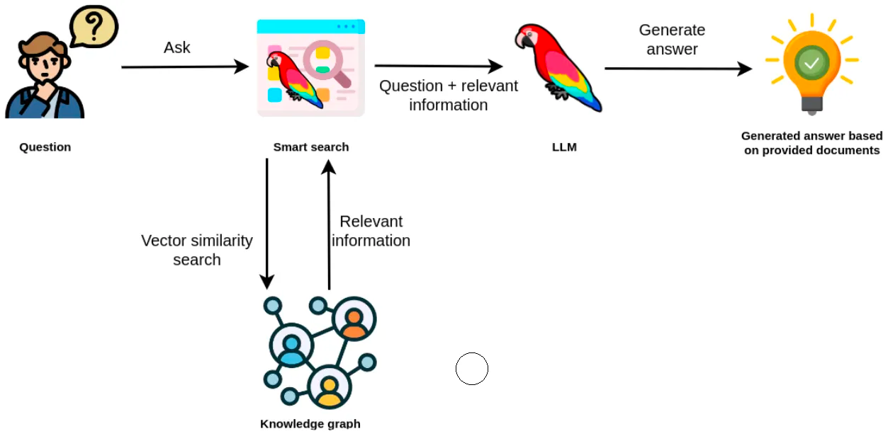{width="6.5in" height="3.1944444444444446in"}[Vector similarity search in a RAG application. Image by author.]{.mark}
The retrieved information from the vector index can then be used as context to the LLM so it can generate accurate and up-to-date answers.
The tasks are already in our knowledge graph. However, we need to calculate the embedding values and create the vector index. This can be achieved with the from_existing_graph method.
import os
from langchain.vectorstores.neo4j_vector import Neo4jVector
from langchain.embeddings.openai import OpenAIEmbeddings
os.environ[\'OPENAI_API_KEY\'] = \"OPENAI_API_KEY\"
vector_index = Neo4jVector.from_existing_graph(
OpenAIEmbeddings(),
url=url,
username=username,
password=password,
index_name=\'tasks\',
node_label=\"Task\",
text_node_properties=[\'name\', \'description\', \'status\'],
embedding_node_property=\'embedding\',
)
In this example, we used the following graph-specific parameters for the from_existing_graph method.
-
index_name: name of the vector index
node_label: node label of relevant nodes
text_node_properties: properties to be used to calculate embeddings and retrieve from the vector index
embedding_node_property: which property to store the embedding values to
Now that the vector index has been initiated, we can use it as any other vector index in LangChain.
response = vector_index.similarity_search(
\"How will RecommendationService be updated?\"
)
print(response[0].page_content)
# name: BugFix
# description: Add a new feature to RecommendationService to provide ...
# status: In Progress
You can observe that we construct a response of a map or dictionary-like string with defined properties in the text_node_properties parameter.
Now we can easily create a chatbot response by wrapping the vector index into a RetrievalQA module.
from langchain.chains import RetrievalQA
from langchain.chat_models import ChatOpenAI
vector_qa = RetrievalQA.from_chain_type(
llm=ChatOpenAI(),
chain_type=\"stuff\",
retriever=vector_index.as_retriever()
)
vector_qa.run(
\"How will recommendation service be updated?\"
)
# The RecommendationService is currently being updated to include a new feature
# that will provide more personalized and accurate product recommendations to
# users. This update involves leveraging user behavior and preference data to
# enhance the recommendation algorithm. The status of this update is currently
# in progress.
One limitation of vector indexes, in general, is that they don't provide the ability to aggregate information like you would with a structured query language like Cypher. Take, for example, the following example:
vector_qa.run(
\"How many open tickets there are?\"
)
# There are 4 open tickets.
The response seems valid, and the LLM uses assertive language, making you believe the result is correct. However, the problem is that the response directly correlates to the number of retrieved documents from the vector index, which is four by default. What actually happens is that the vector index retrieves four open tickets, and the LLM unquestioningly believes that those are all the open tickets. However, the truth is different, and we can validate it using a Cypher statement.
graph.query(
\"MATCH (t:Task {status:\'Open\'}) RETURN count(*)\"
)
# [{\'count(*)\': 5}]
There are five open tasks in our toy graph. While vector similarity search is excellent for sifting through relevant information in unstructured text, it lacks the capability to analyze and aggregate structured information. Using Neo4j, this problem can be easily solved by employing Cypher, which is a structured query language for graph databases.
Graph Cypher search
Cypher is a structured query language designed to interact with graph databases and provides a visual way of matching patterns and relationships. It relies on the following ascii-art type of syntax:
(:Person {name:\"Tomaz\"})-[:LIVES_IN]->(:Country {name:\"Slovenia\"})
This patterns describes a node with a label Person and the name property Tomaz that has a LIVES_IN relationship to the Country node of Slovenia.
The neat thing about LangChain is that it provides a GraphCypherQAChain, which generates the Cypher queries for you, so you don't have to learn Cypher syntax in order to retrieve information from a graph database like Neo4j.
The following code will refresh the graph schema and instantiate the Cypher chain.
from langchain.chains import GraphCypherQAChain
graph.refresh_schema()
cypher_chain = GraphCypherQAChain.from_llm(
cypher_llm = ChatOpenAI(temperature=0, model_name=\'gpt-4\'),
qa_llm = ChatOpenAI(temperature=0), graph=graph, verbose=True,
)
Generating valid Cypher statements is a complex task. Therefore, it is recommended to use state-of-the-art LLMs like gpt-4 to generate Cypher statements, while generating answers using the database context can be left to gpt-3.5-turbo.
Now, you can ask the same question about how many tickets are open.
cypher_chain.run(
\"How many open tickets there are?\"
)
Result is the following
 {width="4.263888888888889in"
height="1.8194444444444444in"}
{width="4.263888888888889in"
height="1.8194444444444444in"}
You can also ask the chain to aggregate the data using various grouping keys, like the following example.
cypher_chain.run(
\"Which team has the most open tasks?\"
)
Result is the following
 {width="4.597222222222222in"
height="2.3472222222222223in"}
{width="4.597222222222222in"
height="2.3472222222222223in"}
You might say these aggregations are not graph-based operations, and you will be correct. We can, of course, perform more graph-based operations like traversing the dependency graph of microservices.
cypher_chain.run(
\"Which services depend on Database directly?\"
)
Result is the following
 {width="6.5in"
height="1.5555555555555556in"}
{width="6.5in"
height="1.5555555555555556in"}
\ Of course, you can also ask the chain to produce variable-length path traversals by asking questions like:
cypher_chain.run(
\"Which services depend on Database indirectly?\"
)
{width="6.5in" height="1.6666666666666667in"}
Some of the mentioned services are the same as in the directly dependent question. The reason is the structure of the dependency graph and not the invalid Cypher statement.
Knowledge graph agent
Since we have implemented separate tools for the structured and unstructured parts of the knowledge graph, we can add an agent that can use these two tools to explore the knowledge graph.
from langchain.agents import initialize_agent, Tool
from langchain.agents import AgentType
tools = [
Tool(
name=\"Tasks\",
func=vector_qa.run,
description=\"\"\"Useful when you need to answer questions about descriptions of tasks.
Not useful for counting the number of tasks.
Use full question as input.
\"\"\",
),
Tool(
name=\"Graph\",
func=cypher_chain.run,
description=\"\"\"Useful when you need to answer questions about microservices,
their dependencies or assigned people. Also useful for any sort of
aggregation like counting the number of tasks, etc.
Use full question as input.
\"\"\",
),
]
mrkl = initialize_agent(
tools,
ChatOpenAI(temperature=0, model_name=\'gpt-4\'),
agent=AgentType.OPENAI_FUNCTIONS, verbose=True
)
Let's try out how well does the agent works.
response = mrkl.run(\"Which team is assigned to maintain PaymentService?\")
print(response)
Result is the following
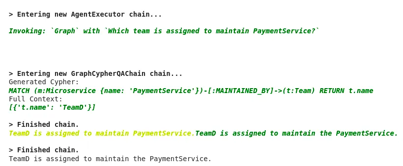{width="6.5in" height="2.6805555555555554in"}
Let's now try to invoke the Tasks tool.
response = mrkl.run(\"Which tasks have optimization in their description?\")
print(response)
Result is the following
 {width="6.5in"
height="2.4722222222222223in"}
{width="6.5in"
height="2.4722222222222223in"}
One thing is certain. I have to work on my agent prompt engineering skills. There is definitely room for improvement in tools description. Additionally, you can also customize the agent prompt.
Conclusion
Knowledge graphs are an excellent fit when you require structured and unstructured data to power your RAG applications. With the approach shown in this blog post, you can avoid polyglot architectures, where you must maintain and sync multiple types of databases. Learn more about graph-based search in LangChain here.
The code is available on GitHub.
Finally, a note on DPO
The current gold standard to build LLM models is as follows:
{width="6.5in" height="2.611111111111111in"}
Source: Chip Huyen
You first assemble billions of documents with trillions of words and, in a self-supervised manner, you ask the model to predict the next token (word or sub-word) to a given sequence.
Self-supervised training is a training method where the supervisory signal, the element that tells the model if it is correct or wrong, is given by the training data without requiring human labeling.
In the case of ChatGPT, it is given by masking --- hiding --- the next word, forcing a prediction, and comparing the word the model chose with the actual masked word. Next, you want to teach the model to behave in a certain way, like being able to answer questions when prompted. That takes us to step 2, where we assemble a dataset where the model performs the same exercise, but on a curated, dialogue-based form, becoming what we define as assistants.
[But we not only want the model to behave in a certain way, we also want it to maximize the quality and safety of its responses.]{.mark}
[Reinforcement Learning]{.mark} [from Human Feedback, or RLHF, steps 3 and 4, does exactly that, by teaching the model to not only answer as expected but to give the best and safest possible answer aligned with human preferences.]{.mark}
[However, there's a problem here.]{.mark}
[Money goes brrrr]{.mark}
[RLHF involves three steps:]{.mark}
[Building a preference dataset. By prompting the model in step 2, they build a dataset of {prompt, response 1, response 2}, where a group of humans decides which response is better, 1 or 2.]{.mark}
[Training a reward model. Step 3 in the previous diagram, you build a model that learns to predict, for every new response, how good is it. As you may imagine, we use the preference dataset to train this model, by training it to assign a higher score to the preferred response out of every pair.]{.mark}
[Maximize reward. Finally, in step 4 of the diagram, we train the model to maximize the reward. In other words, we train our model on a policy that learns to obtain the highest rewards from the reward model. As this model represents human preferences, we are implicitly aligning our model to those human preferences.]{.mark}
[In layman's terms, you are training a model to find the ideal policy that learns to take the best action, in this case word prediction, for every given text.]{.mark}
[Think of a policy as a decision-making framework, the model learns to take the best action (word prediction) to a given state (prompt).]{.mark}
[And that gives us ChatGPT. And Claude. And Gemini. But with RLHF, costs get real.]{.mark}
[Even though the first two steps before RLHF already consume millions of US dollars, RLHF is just prohibitive for the majority of the world's researchers, because:]{.mark}
[It involves building a highly curated dataset that requires extensive model prompting and also the collaboration of expensive human experts.]{.mark}
[It requires training an entirely new model, the reward model. This model is often as big and as good as the model we are aligning, doubling the compute costs.]{.mark}
[And it also involves running the soon-to-be-aligned model and reward model in an iterative Reinforcement Learning training cycle.]{.mark}
[Put simply, unless you go by the name of Microsoft, Anthropic, Google, and a few others, RLFH is way out of your league.]{.mark}
[But DPO certainly isn't.]{.mark}
[Keep it Simple, Stupid]{.mark}
[Direct Preference Optimization (DPO) is a mathematical breakthrough where the trained model is aligned to human preferences without requiring a Reinforcement Learning loop.]{.mark}
[In other words, you optimize against an implicit reward without explicitly materializing that reward.]{.mark}
[Without materializing a reward model.]{.mark}
[But before answering what the hell that means, we need to review how models learn.]{.mark}
[It's just trial and error!]{.mark}
[Basically, all neural networks, be that ChatGPT or Stable Diffusion, are trained using backpropagation.]{.mark}
[In succinct terms, it's no more than glorified trial and error.]{.mark}
[You define a computable loss that tells the model how wrong its prediction is, and you apply undergraduate-level calculus to optimize the parameters of the model to slowly minimize that loss using partial derivatives.]{.mark}
[How do we actually optimize the model?]{.mark}
[In very simple terms, for every prediction, you compute the loss and calculate the gradient of each parameter to that loss.]{.mark}
[A positive gradient for a parameter means increasing the value of the parameter increases the loss, thus signaling us to reduce its value, and viceversa.]{.mark}
[But what does this mean in the context of ChatGPT and other LLMs?]{.mark}
[If we think about ChatGPT and its next token prediction task, as in training we know what the predicted word should be, our loss function is computed as the probability the model gives to the correct word out of all the words in its vocabulary.]{.mark}
[If you're having trouble following, that's probably because I must clarify that when we say that ChatGPT 'predicts the next word in the sequence' what it's really doing is, out of the thousands of words in its vocabulary, it is assigning a likelihood percentage to each word, signaling how confident it is about that word being the most appropriate to go next.]{.mark}
[In most cases, models simply choose the word with the highest assigned probability, which goes by the name of 'greedy decoding'.]{.mark}
[For instance, the loss is quite big if we know the next word should be "Cafe" and the model has only assigned a 10% probability to that word.]{.mark}

[Source: \@akshar_pachaar (X.com)]{.mark}
[Consequently, the model slowly learns to assign the highest probability possible to the correct word, thereby learning to efficiently model language.]{.mark}
[Therefore, looking at the earlier four-step diagram, in steps 1 and 2 the model learns just how we just explained, and in the case of RLHF, the loss function essentially teaches the model to maximize a reward.]{.mark}
[Specifically, the loss function in RLHF looks something like this:]{.mark}
 {width="6.5in"
height="0.5138888888888888in"}
{width="6.5in"
height="0.5138888888888888in"}
[where the first term r(x,y) computes the reward given by the reward model.]{.mark}
[And what about the subtracting term?]{.mark}
[The RLHF loss function also includes a regularization term to avoid the model drifting too much from the original model.]{.mark}
[So, what makes DPO different from RLHF?]{.mark}
[Algebra comes to our aide]{.mark}
[The key intuition is that, unlike RLHF, DPO does not need a new model --- the reward model --- to compute the alignment process.]{.mark}
[In other words, the Language Model you are training is secretly its own reward model.]{.mark}
[Now, what on Earth do we mean by that.]{.mark}
 {width="6.5in"
height="1.3611111111111112in"}
{width="6.5in"
height="1.3611111111111112in"}
[Source: Stanford]{.mark}
[Using clever algebra and based on the Bradley-Terry preference model --- a probability framework that essentially predicts the best option among a comparison of two possible options --- they implicitly define the reward and train the LLM directly without requiring an explicit reward model.]{.mark}
[Although the DPO paper gives the complete mathematical procedure, the key intuition is that the process goes from:]{.mark}
[Training an LLM define a preference dataset training a reward model training the LLM to find the optimal policy that maximizes the reward, to:]{.mark}
[Training an LLM define a preference dataset training the LLM to find the optimal policy.]{.mark}
[In other words, no reward model. But how do we compute then the reward in DPO?]{.mark}
[Fascinatingly, the reward is implicitly defined as part of the optimal policy.]{.mark}
[What DPO proves is that, when working with a human preference dataset, we don't need to first create a reward model that predicts what a human would choose and then use that model to optimize our goal model.]{.mark}
[In fact, we can do both steps in one by directly finding the optimal policy that aligns with our model without calculating the actual reward. This works because the optimal policy is a function of the reward, meaning that by finding that policy we are implicitly maximizing the reward.]{.mark}
[Bottom line, you can think of DPO as a cool algebra trick that skips calculating the reward explicitly by directly finding the policy that implicitly maximizes the reward.]{.mark}
[This gives us the following loss function:]{.mark}
{width="6.5in" height="0.6527777777777778in"}
[Where yw and yl stand for the winning and losing response in a given comparison.]{.mark}
[The intuition is that the higher the probability the policy gives to the preferred response, and the lower the assigned probability to the losing response, the smaller the loss.]{.mark}
[Compared to the loss function used in RLHF we saw earlier, instead of having our loss function as a function of a reward calculated by another model, our loss function is a function of the optimal policy that maximizes the reward without us having to actually compute that reward.]{.mark}
[Brilliant!]{.mark}
[2024, the Year of Efficiency]{.mark}
[We aren't even halfway through January and we have already seen the disruption of one of the most painful and expensive, yet essential steps in the creation of our best models.]{.mark}
[Unequivocally, DPO levels the playing field, allowing universities and small-time research labs to build models that can be aligned with orders of magnitude lower costs.]{.mark}
[What you need to know about Self-Hosting Large Language Models (LLMs)]{.mark}
[Companies in regulated industries need to have the ability to self-host open-source LLM models to regain control of their own privacy.]{.mark}
[Since its arrival in November 2022, ChatGPT has revolutionized the way we all work by leveraging generative artificial intelligence (AI) to streamline tasks, produce content, and provide swift and error-free recommendations. By harnessing the power of this groundbreaking technology, companies and individuals can amplify efficiency and precision while reducing reliance on human intervention.\ \ At the core of ChatGPT and other AI algorithms lie Large Language Models (LLMs), renowned for their remarkable capacity to generate human-like written content. One prominent application of LLMs is in the realm of website chatbots utilized by companies.]{.mark}
[By feeding customer and product data into LLMs and continually refining the training, these chatbots can deliver instantaneous responses, personalized recommendations, and unfettered access to information. Furthermore, their round-the-clock availability empowers websites to provide continuous customer support and engagement, unencumbered by constraints of staff availability.\ \ While LLMs are undeniably beneficial for organizations, enabling them to operate more efficiently, there is also a significant concern regarding the utilization of cloud-based services like OpenAI and ChatGPT for LLMs. With sensitive data being entrusted to these cloud-based platforms, companies can potentially lose control over their data security.]{.mark}
[Simply put, they relinquish ownership]{.mark} of their data. In these privacy-conscious times, companies in regulated industries are expected to adhere to the highest standards when it comes to handling customer data and other sensitive information.\ \ In heavily regulated industries like healthcare and finance, companies need to have the ability to self-host some open-source LLM models to regain control of their own privacy. Here is what you need to know about self-hosting LLMs and how you can easily do so with Plural.
Before you decide to self-host
In the past year, the discussion surrounding LLMs has evolved, transitioning from \"Should we utilize LLMs?\" to \"Should we opt for a self-hosted solution or rely on a proprietary off-the-shelf alternative?\"
Like many engineering questions, the answer to this one is not straightforward. While we are strong proponents of self-hosting infrastructure -- we even self-host our AI chatbot for compliance reasons -- we also rely on our Plural platform, leveraging the expertise of our team, to ensure our solution is top-notch.
We often urge our customers to answer these questions below before self-hosting LLMs.
-
Where would you want to host LLMs?
-
Do you have a client-server architecture in mind? Or, something with edge devices, such as on your phone?
It also depends on your use case:
-
What will the LLMs be used for in your organization?
-
Do you work in a regulated industry and need to own your proprietary data?
-
Does it need to be in your product in a short period?
-
Do you have engineering resources and expertise available to build a solution from scratch?
If you require compliance as a crucial feature for your LLM and have the necessary engineering expertise to self-host, you\'ll find an abundance of tools and frameworks available. By combining these various components, you can build your solution from the ground up, tailored to your specific needs.
If your aim is to quickly implement an off-the-shelf model for a RAG-LLM application, which only requires proprietary context, consider using a solution at a higher abstraction level such as OpenLLM, TGI, or vLLM.
Why Self-Host LLMs?
Although there are various advantages to self-hosting LLMs, three key benefits stand out prominently.
- Greater security, privacy, and compliance: It is ultimately the main reason why companies often opt to self-host LLMs. If you were to look at [OpenAI's Terms of Use]{.underline}, it even mentions that "We may use Content from Services other than our API ("Non-API Content") to help develop and improve our Services.
 {width="6.5in"
height="1.9583333333333333in"}OpenAI Terms of Use neglect a users
privacy.
{width="6.5in"
height="1.9583333333333333in"}OpenAI Terms of Use neglect a users
privacy.
Anything you or your [employees upload into ChatGPT will be included in future training data]{.underline}. And, despite its attempt to anonymize the data, it ultimately contributes knowledge of the model. Unsurprisingly, there is even a conversation happening in the space as to whether or not [ChatGPT\'s use of data is even legal]{.underline}, but that's a topic for a different day. What we do know is that many privacy-conscious companies have already begun to [prohibit employees from using ChatGPT]{.underline}.\ \ 2. Customization: By self-hosting LLMs, you can scale alongside your use case. Organizations that rely heavily on LLMs might reach a point where it becomes economical to self-host. A telltale sign of this occurring is when you begin to hit rate limits with public API endpoints and the performance of these models is ultimately affected. Ideally, you can build it all yourself, train a model, and create a model server for your chosen ML framework/model runtime (e.g. tf, [PyTorch,]{.underline} Jax.), but most likely you would leverage a distributed ML framework like [Ray]{.underline}.
3. Avoid Vendor-Lock-In: When between open-source and proprietary solutions, a crucial question to address is your comfort with cloud vendor lock-in. Major machine learning services provide their own managed ML services, allowing you to host an LLM model server. However, migrating between them can be challenging, and depending on your specific use case, it may result in higher long-term expenses compared to open-source alternatives.
Popular Solutions to host LLMs
OpenLLM via Yatai
GitHub - bentoml/OpenLLM: Operating LLMs in production
Operating LLMs in production. Contribute to bentoml/OpenLLM development by creating an account on GitHub.
 {width="5.333333333333333in"
height="5.333333333333333in"}GitHubbentoml
{width="5.333333333333333in"
height="5.333333333333333in"}GitHubbentoml

OpenLLM via Yatai
OpenLLM is specifically tailored for AI application developers who are tirelessly building production-ready applications using LLMs. It brings forth an extensive array of tools and functionalities to seamlessly fine-tune, serve, deploy, and monitor these models, streamlining the end-to-end deployment workflow for LLMs.
Features that stand out
-
Serve LLMs over a RESTful API or gRPC with a single command. You can interact with the model using a Web UI, CLI, Python/JavaScript client, or any HTTP client of your choice.
-
First-class support for LangChain, BentoML, and Hugging Face Agents
-
E.g., tie a remote self-hosted OpenLLM into your langchain app
-
Token streaming support
-
Embedding endpoint support
-
Quantization support
-
You can fuse model-compatible existing pre-trained [QLoRAa/LoRA adapters]{.underline} with the chosen LLM with the addition of a flag to the serve command, still experimental though:\ [https://github.com/bentoml/OpenLLM#-fine-tuning-support-experimental]{.underline}
Why run Yatai on Plural
GitHub - bentoml/Yatai: Model Deployment at Scale on Kubernetes
Model Deployment at Scale on Kubernetes . Contribute to bentoml/Yatai development by creating an account on GitHub.
{width="5.333333333333333in"
height="5.333333333333333in"}GitHubbentoml

Yatai on Plural.sh
If you check out the official GitHub repo of OpenLLM you'll see that the integration with BentoML makes it easy to run multiple LLMs in parallel across multiple GPUs/Nodes, or chain LLMs with other types of AI/ML models, and deploy the entire pipeline on BentoCloud https://l.bentoml.com/bento-cloud. However, you can achieve the same on a [Plural-deployed Kubernetes via Yatai]{.underline} , which is essentially an open-source BentoCloud which should come at a much lower price point.
Ray Serve Via Ray Cluster
Ray Serve: Scalable and Programmable Serving --- Ray 2.7.0
 {width="0.6944444444444444in"
height="0.6944444444444444in"}Ray 2.7.0
{width="0.6944444444444444in"
height="0.6944444444444444in"}Ray 2.7.0
 {width="0.6944444444444444in"
height="0.6944444444444444in"}
{width="0.6944444444444444in"
height="0.6944444444444444in"}
Ray Serve via Ray Cluster
Ray Serve is a scalable model-serving library for building online inference APIs. Serve is framework-agnostic, so you can use a single toolkit to serve everything from deep learning models built with frameworks like PyTorch, TensorFlow, and Keras, to Scikit-Learn models, to arbitrary Python business logic. It has several features and performance optimizations for serving Large Language Models such as response streaming, dynamic request batching, multi-node/multi-GPU serving, etc.
Features that stand out
-
It's a huge well-documented ML Platform. In our opinion, it is the best-documented platform with loads of examples to work off of. However, you need to know what you're doing when working with it, and it takes some time to get adapted.
-
Not focused on LLMs, but there are many examples of how to OS LLMS from Hugging Face,
-
Integrates nicely with Prometheus for cluster metrics and comes with a useful dashboard for you to monitor both servings and if you're doing anything else on your ray cluster like data processing or model training, that can be monitored nicely.
-
It's [what OpenAI uses to train and host their models]{.underline}, so it's fair to say it is probably the most robust solution ready to handle production-ready use cases.
Why run Ray on Plural
Plural offers a fully functional Ray cluster on a Plural-deployed Kubernetes cluster where you can do anything you can do with Ray, from data-parallel data-crunching over distributed model training to serving off-the-shelf OS LLMs
Hugginface's TGI
GitHub - huggingface/text-generation-inference: Large Language Model Text Generation Inference
Large Language Model Text Generation Inference. Contribute to huggingface/text-generation-inference development by creating an account on GitHub.
{width="5.333333333333333in"
height="5.333333333333333in"}GitHubhuggingface

Hugginface TGI
A Rust, Python, and gRPC server for text generation inference. Used in production at [HuggingFace]{.underline} to power Hugging Chat, the Inference API, and Inference Endpoint.
Features that stand out
-
Everything you need is containerized, so if you just want to run off-the-shelf HF models, this is probably one of the quickest ways to do it.
-
They have no intent at the time of this writing to provide [official Kubernetes support]{.underline}, citing
Why run Hugging Face LLM on Plural
When you run an HF LLM model inference server via Text Generation Inference (TGI) on a Plural-deployed Kubernetes cluster you benefit from all the goodness of our built-in telemetry, monitoring, and integration with other marketplace apps to orchestrate it and host your data and vector stores. Here is a great example we recommend following along for deploying TGI on Kubernetes.
GitHub - louis030195/text-generation-inference-helm
Contribute to louis030195/text-generation-inference-helm development by creating an account on GitHub.
{width="5.333333333333333in"
height="5.333333333333333in"}GitHublouis030195

Example of deploying TGI on Kubernetes
Building a LLM stack to self-host
When building an LLM stack, the first hurdle you\'ll encounter is finding the ideal stack that caters to your specific requirements. Given the multitude of available options, the decision-making process can be overwhelming. Once you\'ve narrowed down your choices, creating and deploying a small application on a local host becomes a relatively straightforward task.
However, scaling said application presents an entirely separate challenge, which requires a certain level of expertise and time. For that, you'll want to leverage some of the OS cloud-native platforms/tools we outlined above. It might make sense to use [Ray]{.underline} in some cases as it gives you an end-to-end platform to process data, train, tune, and serve your ML applications beyond LLMs.
[OpenLLM]{.underline} is more geared towards simplicity and operates at a higher abstraction level than Ray. If your end goal is to host a [RAG]{.underline} LLM-app using langchain and/or llama-index, OpenLLM in conjunction with Yatai probably can get you there quickest. Keep in mind if you do end up going that route you'll likely compromise on flexibility as opposed to Ray.\ \ For a typical RAG LLM app, you want to set up a data stack alongside the model serving component where you orchestrate periodic or event-driven updates to your data as well as all the related data-mangling, creating embeddings, fine-tuning the models, etc.
The [Plural marketplace]{.underline} offers various data stack apps that can perfectly suit your needs. Additionally, our marketplace provides document-store/retrieval optimized databases, such as [Elastic]{.underline} or Weaviate, which can be used as vector databases. Furthermore, during operations, monitoring and telemetry play a crucial role. For instance, a Grafana dashboard for your self-hosted LLM app could prove to be immensely valuable.
If you choose to go a different route you can elect to use a proprietary managed service or SaaS solution (which doesn't come without overhead either, as it would require additional domain-specific knowledge as well.) Operating and maintaining those platforms on Kubernetes is the main overhead you'll have.
Plural to self-host LLMs
If you were to choose a solution like Plural you can focus on building your applications and not worry about the day-2 operations that come with maintaining those applications. If you are still debating between ML tooling, it could be beneficial to spin up an example architecture using Plural.
Our platform can bridge the gap between the "localhost" and "hello-world" examples in these frameworks to scalable production-ready apps because you don't lose time on figuring out how to self-host model-hosting platforms like [Ray]{.underline} and [Yatai]{.underline}.
[Plural]{.underline} is a solution that aims to provide a balance between self-hosting infrastructure applications within your own cloud account, seamless upgrades, and scaling.
To learn more about how Plural works and how we are helping organizations deploy secure and scalable machine learning infrastructure on Kubernetes, reach out to our team to [schedule a demo]{.underline}.
If you would like to test out Plural, sign up for a [free open-source account]{.underline} and get started today.